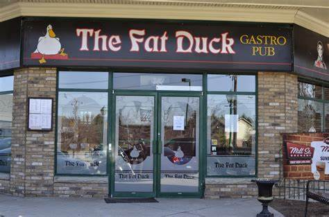
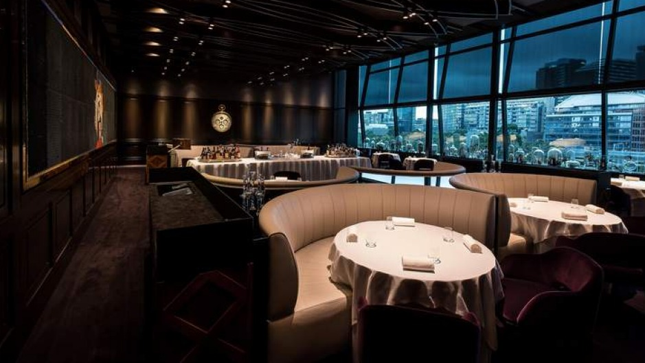
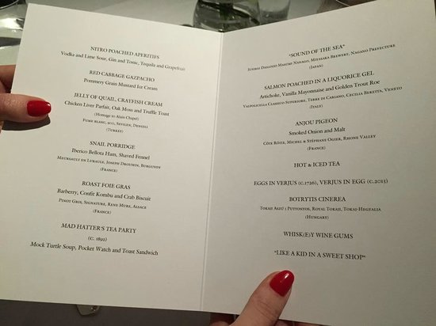
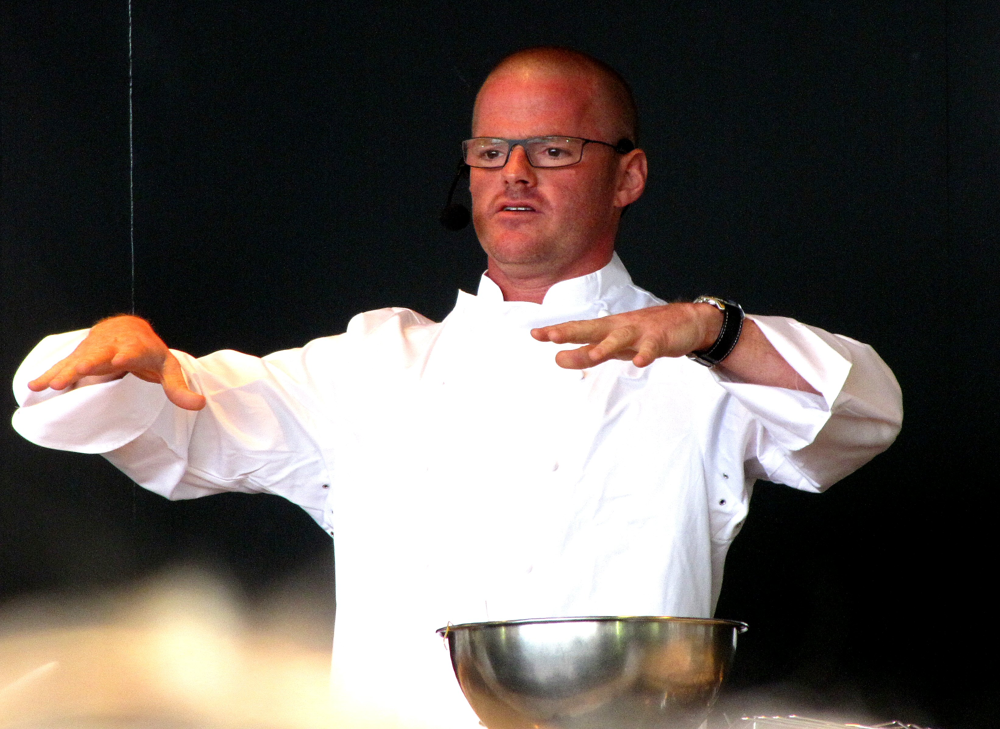

The Fat Duck is a fine dining restaurant in Bray, Berkshire, England. It is run by celebrity chef proprietor Heston Blumenthal. Housed in a 16th-century building that had previously been the site of the Bell pub, the Fat Duck opened on 16 August 1995. Although it originally served food similar to that of a French bistro, it soon acquired a reputation for precision and invention, and has been at the forefront of many modern culinary developments, such as food pairing, flavour encapsulation and multi-sensory cooking. The number of staff in the kitchen has increased from four when it first opened to 42, resulting in a ratio of one kitchen staff member per customer. The restaurant gained its first Michelin star in 1999, its second in 2002 and its third in 2004, making it one of eight in the United Kingdom to earn three Michelin stars. It lost its status as a three-starred restaurant in the 2016 guide due to renovation preventing it from being open for assessment. The restaurant regained three stars in the following year's Michelin guide. The restaurant is known for its fourteen-course tasting menu featuring dishes such as nitro-scrambled egg and bacon ice cream, an Alice in Wonderland-inspired mock turtle soup involving a bouillon packet made up to look like a fob watch dissolved in tea, and a dish called Sound of the Sea which includes an audio element. The restaurant has an associated laboratory where Blumenthal and his team develop new dish concepts. In 2009, the restaurant suffered from the largest norovirus outbreak ever documented at a restaurant with over 400 diners falling ill.
 The Fat Duck is located in a 16th-century cottage that was further modified in the 19th and 20th centuries. Prior to the restaurant opening in the location, it was a public house called the Ringers. The building was Grade II listed by English Heritage on 2 May 1989. When the restaurant opened in 1995, the kitchen was staffed by owner Heston Blumenthal and one other employee. At the time the restaurant was serving meals in the style of a French bistro, such as lemon tarts, and steak and chips. Blumenthal later said that science had already begun to influence the cooking at this early stage, as already on the menu were his triple-cooked chips, which were developed to stop the potato from going soft.
Blumenthal was inspired as a teenager by trips to the Michelin-starred restaurants in France and the work of Harold McGee. McGee's work in particular led him to question traditional cooking techniques and approaches which resulted in combinations which may at first appear unusual.[13] Blumenthal incorporates psychology and the perception of diners into his dishes, explaining, "For example, eat sardine on toast sorbet for the first time, confusion will reign as the brain will be trying to tell the palate to expect a dessert and you will therefore be tasting more sweetness than actually exists."[14] The restaurant serves a fourteen-course tasting menu.[15] Dishes served include palate cleansers made of vodka and green tea, frozen in liquid nitrogen, a snail porridge that was described by one food critic as "infamous", and ice creams of both crab, and egg and bacon, each of which resulted in increased media attention for the restaurant. The mock turtle soup has an Alice in Wonderland theme, where a fob watch formed of freeze-dried beef stock covered with gold leaf is dropped into a tea cup by a waiter, who pours a beef stock "tea" poured over it that dissolves the gold and the watch. A plate of ox tongue and vegetables is served alongside it to place into the soup. Toast sandwiches are served as a side dish. It had been developed for an appearance on Heston's Feasts, and was afterwards added to the menu at the restaurant. Dishes are served with additional sensory inputs, such as "Sounds of the Sea", a plate of seafood served with a seafood foam on top of a "beach" of tapioca, breadcrumbs and eel. Alongside the dish, diners are given an iPod to listen to crashing waves whilst they eat. Other additional sensory components include "the smell of the Black Forest" that accompanies a kirsch ice cream.
On 27 February 2009, Blumenthal closed his restaurant temporarily after a number of customers reported feeling unwell at different times. By 3 March the source of the outbreak was still unclear but sabotage had been ruled out. A spokesman for the restaurant said "All this leads us to believe that it [the health scare] has not come from the restaurant and we expect to be given the all clear." On 6 March it was reported that 400 people had stated they had felt unwell after eating at the restaurant. The restaurant reopened on 12 March 2009. The cause of the illness was later given by the Health Protection Agency as norovirus, which was thought to originate from oysters which had been harvested from beds contaminated with sewage. The virus was spread further after being contracted by staff members. The restaurant was criticised for its cleaning methods and its slow response to the incident. Complaints of illness from customers totalled 529. The Fat Duck had received negative publicity regarding health standards before, when food and safety officers in 2004 found "borderline" levels of listeria in the foie gras and expressed concern that "no core temperatures of the meat are taken".
